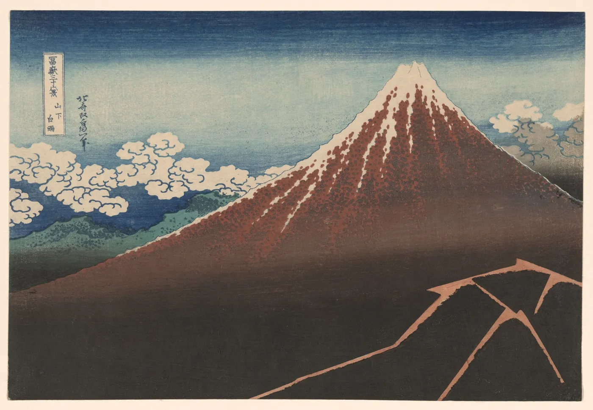

<title>Antimony, The Break</title>
<meta name="claude:viewport-fit-sides" content="cover">
<style>
/* The Break: one exact mark, solid and in line. The world around it from Nurture (washi, Hiroshige light, a hand that colours the gold); the bearing of an institution (restraint, a serif, materials). */
@font-face { font-family: "Schibsted Grotesk"; src: url(sg.woff2) format("woff2"); font-weight: 400 900; font-display: swap; }
@font-face { font-family: "Timeless Serif"; src: url(fonts/TimelessSerifVF.woff2) format("woff2"); font-weight: 200 700; font-display: swap; }
@font-face { font-family: "Timeless Serif"; src: url(fonts/TimelessSerifItalicVF.woff2) format("woff2"); font-weight: 200 700; font-style: italic; font-display: swap; }
@font-face { font-family: "Commit Mono"; src: url(fonts/CommitMono-Latin-VF.woff2) format("woff2"); font-weight: 200 700; font-display: swap; }
:root { --washi: #F3ECDD; --ink: #141311; --prussian: #1F3F7A; --sky: #94E6FF; --dim: #6A665E; --rule: rgba(20,19,17,.12); color-scheme: light; }
* { box-sizing: border-box; margin: 0; }
html, body { background: var(--washi); color: var(--ink); }
body { font: 400 16px/1.6 "Timeless Serif", Georgia, serif; -webkit-font-smoothing: antialiased; }
a { color: var(--prussian); }
.band { padding-left: max(16px, env(safe-area-inset-left, 0px)); padding-right: max(16px, env(safe-area-inset-right, 0px)); padding-block: 80px; }
.band + .band { border-top: 1px solid var(--rule); }
.band.ink { background: #121110; color: #EDE6D6; --rule: rgba(237,230,214,.14); --dim: #A49D8E; }
.in { max-width: 1160px; margin-inline: auto; display: grid; gap: 32px; }
.k { font: 500 11.5px/1 "Commit Mono", monospace; letter-spacing: .1em; text-transform: uppercase; color: var(--dim); }
h1 { font: 400 clamp(46px, 7.6vw, 108px)/.95 "Timeless Serif", Georgia, serif; letter-spacing: -.025em; text-wrap: balance; }
h2 { font: 400 clamp(32px, 4.2vw, 54px)/1.03 "Timeless Serif", Georgia, serif; letter-spacing: -.015em; text-wrap: balance; max-width: 17em; }
.lede { font-size: clamp(19px, 2vw, 23px); line-height: 1.5; max-width: 33em; }
p { max-width: 38em; } .dim { color: var(--dim); }
.hero { display: grid; grid-template-columns: minmax(0, 1fr) minmax(0, 1fr); gap: 60px; align-items: center; }
.win { position: relative; aspect-ratio: 1; width: 100%; max-width: 100%; }
.win svg, .win canvas { position: absolute; inset: 0; width: 100%; height: 100%; display: block; }
.win canvas { image-rendering: pixelated; pointer-events: none; }
.hero .win { max-width: 460px; justify-self: center; cursor: pointer; }
.pair { display: grid; grid-template-columns: repeat(4, minmax(0, 1fr)); gap: 14px; }
.t { display: grid; gap: 8px; margin: 0; } .t > div { aspect-ratio: 1; max-width: 100%; padding: 18%; border-radius: 16px; display: grid; }
.t > div > svg { width: 100%; height: 100%; display: block; }
figcaption { font: 500 12px "Commit Mono", monospace; color: var(--dim); }
.means { display: grid; grid-template-columns: repeat(5, minmax(0, 1fr)); gap: 0; border-top: 1px solid var(--rule); }
.means div { padding: 16px 16px 0 0; display: grid; gap: 6px; align-content: start; } .means b { font-weight: 400; font-size: 19px; line-height: 1.2; } .means span { font-size: 14.5px; color: var(--dim); }
.world { display: grid; grid-template-columns: repeat(3, minmax(0, 1fr)); gap: 16px; }
.post { aspect-ratio: 4 / 5; max-width: 100%; border-radius: 10px; position: relative; overflow: hidden; display: grid; place-items: center; padding: 16%; }
.post .win { width: 100%; }
.post .cap { position: absolute; left: 8%; right: 8%; bottom: 6%; font: italic 400 15px/1.3 "Timeless Serif", serif; }
.ban { position: relative; aspect-ratio: 1584 / 396; max-width: 100%; border-radius: 10px; overflow: hidden; background: #1A2A4A; }
.ban img { width: 100%; height: 100%; object-fit: cover; object-position: 50% 38%; display: block; }
.ban .lab { position: absolute; right: 3%; bottom: 12%; background: var(--washi); padding: 2.2% 2.8%; border-radius: 4px; display: grid; gap: 6px; }
.ban .lab span { font: italic 400 clamp(12px, 1.6vw, 19px)/1.2 "Timeless Serif", serif; color: var(--prussian); }
.lk { display: flex; align-items: center; gap: 12px; } .lk svg { flex: none; display: block; }
.wm { font: 700 36px/1 "Schibsted Grotesk", sans-serif; letter-spacing: -.045em; }
.lk.serif span { font: 400 34px/1 "Timeless Serif", serif; letter-spacing: -.01em; }
.inst { display: grid; grid-template-columns: 1.3fr 1fr; gap: 16px; align-items: start; }
.cardx { aspect-ratio: 856 / 540; max-width: 100%; border-radius: 24px; background: linear-gradient(135deg, #26262A, #0D0D0F); position: relative; overflow: hidden; }
.cardx .m { position: absolute; left: 7%; top: 10%; width: 16%; } .cardx .m svg { width: 100%; height: auto; display: block; }
.cardx .n { position: absolute; left: 7%; bottom: 11%; font: 500 clamp(11px, 1.5vw, 17px) "Commit Mono", monospace; letter-spacing: .3em; color: #8F8B82; }
.cardx .chip { position: absolute; right: 9%; top: 42%; width: 12%; aspect-ratio: 1.3; border-radius: 10%; background: linear-gradient(135deg, #D7C38E, #A68C52); }
.letter { background: #FBF8F1; border-radius: 4px; padding: 7% 8%; aspect-ratio: 210 / 297; max-width: 100%; display: grid; align-content: space-between; box-shadow: 0 1px 0 rgba(0,0,0,.04), 0 18px 40px rgba(60,40,20,.12); }
.letter p { font-size: clamp(11px, 1.25vw, 15px); line-height: 1.6; color: #2A2825; }
.letter .seal { justify-self: end; width: 18%; } .letter .seal svg { width: 100%; height: auto; display: block; }
.sz { display: flex; gap: 16px; align-items: end; flex-wrap: wrap; } .sz i { display: block; flex: none; }
.rules { display: grid; grid-template-columns: repeat(3, minmax(0, 1fr)); gap: 0; border-top: 1px solid var(--rule); }
.rules div { padding: 16px 18px 0 0; display: grid; gap: 6px; } .rules b { font: 500 12px "Commit Mono", monospace; letter-spacing: .06em; text-transform: uppercase; color: var(--dim); }
@media (max-width: 900px) { .hero, .inst { grid-template-columns: 1fr; gap: 32px; } .pair { grid-template-columns: 1fr 1fr; } .means { grid-template-columns: 1fr 1fr; } .world, .rules { grid-template-columns: 1fr; } .band { padding-block: 56px; } }
@media (prefers-reduced-motion: reduce) { .win canvas { display: none; } }
</style>

<section class="band"><div class="in hero">
  <div style="display:grid;gap:26px"><span class="k">Antimony</span><h1>Software for the people who make the work.</h1>
  <p class="lede">A stone split open, and a crystal grown in the break. Look through it and the world is still there: the light, the road, the work. Tap the crystal to colour it in.</p></div>
  <div class="win " style=""><svg viewBox="0 0 100 100" aria-hidden="true"><defs><clipPath id="wc0"><rect width="100" height="100" rx="22"/></clipPath><clipPath id="wg0"><path d="M58.6 21.5L70.58 46.7L67.82 56.3L41.4 81.5L29.42 56.3L32.18 46.7Z"/></clipPath><mask id="wm0"><rect width="100" height="100" fill="#fff"/><path d="M67.46 -12L68.96 -12L62.35 21.5L45.15 81.5L33.4 112L31.9 112L37.65 81.5L54.85 21.5Z" fill="#000"/><path d="M60.75 14.02L78.19 42.8L73.21 60.2L39.25 88.97L21.81 60.2L26.79 42.8Z" fill="#000"/></mask></defs><g clip-path="url(#wc0)"><rect width="100" height="100" fill="#F3ECDD"/><rect width="100" height="100" fill="#141311" mask="url(#wm0)"/><image href="img/19006.webp" x="18" y="16" width="64" height="68" preserveAspectRatio="xMidYMid slice" clip-path="url(#wg0)"/><path d="M58.6 21.5L70.58 46.7L67.82 56.3L41.4 81.5L29.42 56.3L32.18 46.7Z" fill="none" stroke="#141311" stroke-opacity=".25" stroke-width=".5"/></g></svg><canvas class="pencil" width="200" height="200" aria-hidden="true"></canvas></div>
</div></section>

<section class="band"><div class="in">
  <span class="k">The mark</span><h2>One stone. Solid for the name; in line for everything around it.</h2>
  <div class="pair">
    <figure class="t"><div style="background:#fff"><svg viewBox="0 0 100 100" style="" aria-hidden="true"><defs><clipPath id="bc18"><rect width="100" height="100" rx="22"/></clipPath><mask id="bm18"><rect width="100" height="100" fill="#fff"/><path d="M67.46 -12L68.96 -12L62.35 21.5L45.15 81.5L33.4 112L31.9 112L37.65 81.5L54.85 21.5Z" fill="#000"/><path d="M60.75 14.02L78.19 42.8L73.21 60.2L39.25 88.97L21.81 60.2L26.79 42.8Z" fill="#000"/></mask></defs><g clip-path="url(#bc18)"><rect width="100" height="100" fill="#F3F0E8"/><rect width="100" height="100" fill="#141311" mask="url(#bm18)"/><path d="M58.6 21.5L70.58 46.7L67.82 56.3L41.4 81.5L29.42 56.3L32.18 46.7Z" fill="#94E6FF"/><path d="M58.6 21.5L70.58 46.7L67.82 56.3L41.4 81.5Z" fill="#fff" fill-opacity=".28"/></g></svg></div><figcaption>Solid, the mark</figcaption></figure>
    <figure class="t"><div style="background:#121110"><svg viewBox="0 0 100 100" style="" aria-hidden="true"><defs><clipPath id="bc19"><rect width="100" height="100" rx="22"/></clipPath><mask id="bm19"><rect width="100" height="100" fill="#fff"/><path d="M67.46 -12L68.96 -12L62.35 21.5L45.15 81.5L33.4 112L31.9 112L37.65 81.5L54.85 21.5Z" fill="#000"/><path d="M60.75 14.02L78.19 42.8L73.21 60.2L39.25 88.97L21.81 60.2L26.79 42.8Z" fill="#000"/></mask></defs><g clip-path="url(#bc19)"><rect width="100" height="100" fill="#121110"/><rect width="100" height="100" fill="#F3F0E8" mask="url(#bm19)"/><path d="M58.6 21.5L70.58 46.7L67.82 56.3L41.4 81.5L29.42 56.3L32.18 46.7Z" fill="#94E6FF"/><path d="M58.6 21.5L70.58 46.7L67.82 56.3L41.4 81.5Z" fill="#fff" fill-opacity=".28"/></g></svg></div><figcaption>Solid, reversed</figcaption></figure>
    <figure class="t"><div style="background:#fff"><svg viewBox="0 0 100 100" style="" aria-hidden="true"><defs><mask id="lm1"><rect width="100" height="100" fill="#fff"/><path d="M60.75 14.02L78.19 42.8L73.21 60.2L39.25 88.97L21.81 60.2L26.79 42.8Z" fill="#000"/></mask></defs><path d="M58.6 21.5L70.58 46.7L67.82 56.3L41.4 81.5L29.42 56.3L32.18 46.7Z" fill="#94E6FF"/><g fill="none" stroke="#141311" stroke-width="2.6" stroke-linejoin="round"><rect x="1.3" y="1.3" width="97.4" height="97.4" rx="20.7"/><path d="M58.6 21.5L70.58 46.7L67.82 56.3L41.4 81.5L29.42 56.3L32.18 46.7Z"/><path d="M64.76 0L36.10 100" mask="url(#lm1)" stroke-linecap="butt"/></g></svg></div><figcaption>In line, lit</figcaption></figure>
    <figure class="t"><div style="background:#1F3F7A"><svg viewBox="0 0 100 100" style="" aria-hidden="true"><defs><mask id="lm2"><rect width="100" height="100" fill="#fff"/><path d="M60.75 14.02L78.19 42.8L73.21 60.2L39.25 88.97L21.81 60.2L26.79 42.8Z" fill="#000"/></mask></defs><path d="M58.6 21.5L70.58 46.7L67.82 56.3L41.4 81.5L29.42 56.3L32.18 46.7Z" fill="#F4C84A"/><g fill="none" stroke="#F3ECDD" stroke-width="2.6" stroke-linejoin="round"><rect x="1.3" y="1.3" width="97.4" height="97.4" rx="20.7"/><path d="M58.6 21.5L70.58 46.7L67.82 56.3L41.4 81.5L29.42 56.3L32.18 46.7Z"/><path d="M64.76 0L36.10 100" mask="url(#lm2)" stroke-linecap="butt"/></g></svg></div><figcaption>In line, on Prussian</figcaption></figure>
  </div>
  <div class="means"><div><b>A stone, split open</b><span>Something solid, opened to show what is inside.</span></div><div><b>A crystal grown in the break</b><span>Stibnite grows in the cracks of rock, under pressure.</span></div><div><b>An A, leaning forward</b><span>The crack and the crystal together lean at sixteen degrees, the angle of an italic.</span></div><div><b>Raw into refined</b><span>The seam is where rock becomes something of value: antimony refined gold.</span></div><div><b>Two pieces, one stone</b><span>Never alone: the stone only shows the crystal because it is in two parts.</span></div></div>
</div></section>

<section class="band"><div class="in">
  <span class="k">The world, after Nurture</span><h2>Nature seen through a window. The light coloured in by hand.</h2>
  <p>The mark never changes. Everything around it is warm: Hiroshige and Hokusai seen through the crystal, the washi they were printed on, and once, when it first appears, a hand colouring the light in with a pencil, a little outside the lines, before it settles.</p>
  <div class="world">
    <div class="post" style="background:var(--washi);border:1px solid var(--rule)"><div class="win " style=""><svg viewBox="0 0 100 100" aria-hidden="true"><defs><clipPath id="wc3"><rect width="100" height="100" rx="22"/></clipPath><clipPath id="wg3"><path d="M58.6 21.5L70.58 46.7L67.82 56.3L41.4 81.5L29.42 56.3L32.18 46.7Z"/></clipPath><mask id="wm3"><rect width="100" height="100" fill="#fff"/><path d="M67.46 -12L68.96 -12L62.35 21.5L45.15 81.5L33.4 112L31.9 112L37.65 81.5L54.85 21.5Z" fill="#000"/><path d="M60.75 14.02L78.19 42.8L73.21 60.2L39.25 88.97L21.81 60.2L26.79 42.8Z" fill="#000"/></mask></defs><g clip-path="url(#wc3)"><rect width="100" height="100" fill="#F3ECDD"/><rect width="100" height="100" fill="#141311" mask="url(#wm3)"/><image href="img/24800.webp" x="18" y="16" width="64" height="68" preserveAspectRatio="xMidYMid slice" clip-path="url(#wg3)"/><path d="M58.6 21.5L70.58 46.7L67.82 56.3L41.4 81.5L29.42 56.3L32.18 46.7Z" fill="none" stroke="#141311" stroke-opacity=".25" stroke-width=".5"/></g></svg><canvas class="pencil" width="200" height="200" aria-hidden="true"></canvas></div><span class="cap" style="color:var(--prussian)">Ejiri in Suruga, Hokusai, about 1831.</span></div>
    <div class="post" style="background:#9CCBEA"><div class="win " style=""><svg viewBox="0 0 100 100" aria-hidden="true"><defs><clipPath id="wc4"><rect width="100" height="100" rx="22"/></clipPath><clipPath id="wg4"><path d="M58.6 21.5L70.58 46.7L67.82 56.3L41.4 81.5L29.42 56.3L32.18 46.7Z"/></clipPath><mask id="wm4"><rect width="100" height="100" fill="#fff"/><path d="M67.46 -12L68.96 -12L62.35 21.5L45.15 81.5L33.4 112L31.9 112L37.65 81.5L54.85 21.5Z" fill="#000"/><path d="M60.75 14.02L78.19 42.8L73.21 60.2L39.25 88.97L21.81 60.2L26.79 42.8Z" fill="#000"/></mask></defs><g clip-path="url(#wc4)"><rect width="100" height="100" fill="#9CCBEA"/><rect width="100" height="100" fill="#141311" mask="url(#wm4)"/><image href="img/3652.webp" x="18" y="16" width="64" height="68" preserveAspectRatio="xMidYMid slice" clip-path="url(#wg4)"/><path d="M58.6 21.5L70.58 46.7L67.82 56.3L41.4 81.5L29.42 56.3L32.18 46.7Z" fill="none" stroke="#141311" stroke-opacity=".25" stroke-width=".5"/></g></svg><canvas class="pencil" width="200" height="200" aria-hidden="true"></canvas></div><span class="cap" style="color:#1F3F7A">Togetsu Bridge, Arashiyama.</span></div>
    <div class="post" style="background:#1F3F7A"><div class="win " style=""><svg viewBox="0 0 100 100" aria-hidden="true"><defs><clipPath id="wc5"><rect width="100" height="100" rx="22"/></clipPath><clipPath id="wg5"><path d="M58.6 21.5L70.58 46.7L67.82 56.3L41.4 81.5L29.42 56.3L32.18 46.7Z"/></clipPath><mask id="wm5"><rect width="100" height="100" fill="#fff"/><path d="M67.46 -12L68.96 -12L62.35 21.5L45.15 81.5L33.4 112L31.9 112L37.65 81.5L54.85 21.5Z" fill="#000"/><path d="M60.75 14.02L78.19 42.8L73.21 60.2L39.25 88.97L21.81 60.2L26.79 42.8Z" fill="#000"/></mask></defs><g clip-path="url(#wc5)"><rect width="100" height="100" fill="#1F3F7A"/><rect width="100" height="100" fill="#F3ECDD" mask="url(#wm5)"/><image href="img/18972.webp" x="18" y="16" width="64" height="68" preserveAspectRatio="xMidYMid slice" clip-path="url(#wg5)"/><path d="M58.6 21.5L70.58 46.7L67.82 56.3L41.4 81.5L29.42 56.3L32.18 46.7Z" fill="none" stroke="#F3ECDD" stroke-opacity=".25" stroke-width=".5"/></g></svg><canvas class="pencil" width="200" height="200" aria-hidden="true"></canvas></div><span class="cap" style="color:var(--washi)">Autumn moon, Ishiyama.</span></div>
  </div>
  <div class="ban"><div class="lab"><div class="lk serif"><svg width="34" height="34" viewBox="0 0 100 100" style="" aria-hidden="true"><defs><clipPath id="bc20"><rect width="100" height="100" rx="22"/></clipPath><mask id="bm20"><rect width="100" height="100" fill="#fff"/><path d="M67.46 -12L68.96 -12L62.35 21.5L45.15 81.5L33.4 112L31.9 112L37.65 81.5L54.85 21.5Z" fill="#000"/><path d="M60.75 14.02L78.19 42.8L73.21 60.2L39.25 88.97L21.81 60.2L26.79 42.8Z" fill="#000"/></mask></defs><g clip-path="url(#bc20)"><rect width="100" height="100" fill="#F3F0E8"/><rect width="100" height="100" fill="#141311" mask="url(#bm20)"/><path d="M58.6 21.5L70.58 46.7L67.82 56.3L41.4 81.5L29.42 56.3L32.18 46.7Z" fill="#94E6FF"/><path d="M58.6 21.5L70.58 46.7L67.82 56.3L41.4 81.5Z" fill="#fff" fill-opacity=".28"/></g></svg><span style="color:#1F3F7A">Antimony</span></div><span>for the people who make the work.</span></div></div>
</div></section>

<section class="band ink"><div class="in">
  <span class="k">The bearing of an institution</span><h2>Restraint, a serif, and materials that last.</h2>
  <div class="inst">
    <div class="cardx"><span class="m"><svg style="filter:drop-shadow(-1px -1px 0 rgba(255,255,255,.18)) drop-shadow(1px 1.5px 1px rgba(0,0,0,.7))" viewBox="0 0 100 100" style="" aria-hidden="true"><defs><clipPath id="bc21"><rect width="100" height="100" rx="3"/></clipPath><mask id="bm21"><rect width="100" height="100" fill="#fff"/><path d="M67.46 -12L68.96 -12L62.35 21.5L45.15 81.5L33.4 112L31.9 112L37.65 81.5L54.85 21.5Z" fill="#000"/><path d="M60.75 14.02L78.19 42.8L73.21 60.2L39.25 88.97L21.81 60.2L26.79 42.8Z" fill="#000"/></mask></defs><g clip-path="url(#bc21)"><rect width="100" height="100" fill="#2E2E32" mask="url(#bm21)"/><path d="M58.6 21.5L70.58 46.7L67.82 56.3L41.4 81.5L29.42 56.3L32.18 46.7Z" fill="#3A3A3F"/></g></svg></span><span class="chip"></span><span class="n">ANTIMONY</span></div>
    <div class="letter"><div><div class="lk serif"><svg width="34" height="34" viewBox="0 0 100 100" style="" aria-hidden="true"><defs><clipPath id="bc22"><rect width="100" height="100" rx="22"/></clipPath><mask id="bm22"><rect width="100" height="100" fill="#fff"/><path d="M67.46 -12L68.96 -12L62.35 21.5L45.15 81.5L33.4 112L31.9 112L37.65 81.5L54.85 21.5Z" fill="#000"/><path d="M60.75 14.02L78.19 42.8L73.21 60.2L39.25 88.97L21.81 60.2L26.79 42.8Z" fill="#000"/></mask></defs><g clip-path="url(#bc22)"><rect width="100" height="100" fill="#F3F0E8"/><rect width="100" height="100" fill="#141311" mask="url(#bm22)"/><path d="M58.6 21.5L70.58 46.7L67.82 56.3L41.4 81.5L29.42 56.3L32.18 46.7Z" fill="#94E6FF"/><path d="M58.6 21.5L70.58 46.7L67.82 56.3L41.4 81.5Z" fill="#fff" fill-opacity=".28"/></g></svg><span style="color:#141311">Antimony</span></div></div><p>Dear Ada,<br><br>Thank you for the work. The payment for your May campaign has been released in full, as agreed on the brief.<br><br>With care,<br>Antimony</p><span class="seal"><svg viewBox="0 0 100 100" style="" aria-hidden="true"><defs><mask id="lm6"><rect width="100" height="100" fill="#fff"/><path d="M60.75 14.02L78.19 42.8L73.21 60.2L39.25 88.97L21.81 60.2L26.79 42.8Z" fill="#000"/></mask></defs><path d="M58.6 21.5L70.58 46.7L67.82 56.3L41.4 81.5L29.42 56.3L32.18 46.7Z" fill="#94E6FF"/><g fill="none" stroke="#141311" stroke-width="2.2" stroke-linejoin="round"><rect x="1.1" y="1.1" width="97.8" height="97.8" rx="20.9"/><path d="M58.6 21.5L70.58 46.7L67.82 56.3L41.4 81.5L29.42 56.3L32.18 46.7Z"/><path d="M64.76 0L36.10 100" mask="url(#lm6)" stroke-linecap="butt"/></g></svg></span></div>
  </div>
  <div class="sz"><i style="width:16px;height:16px"><svg viewBox="0 0 100 100" style="width:100%;height:100%" aria-hidden="true"><defs><clipPath id="bc23"><rect width="100" height="100" rx="22"/></clipPath><mask id="bm23"><rect width="100" height="100" fill="#fff"/><path d="M66.46 -12L69.96 -12L63.6 21.5L46.4 81.5L34.4 112L30.9 112L36.4 81.5L53.6 21.5Z" fill="#000"/><path d="M61.24 12.3L79.95 41.9L74.45 61.1L38.76 90.7L20.05 61.1L25.55 41.9Z" fill="#000"/></mask></defs><g clip-path="url(#bc23)"><rect width="100" height="100" fill="#F3F0E8"/><rect width="100" height="100" fill="#141311" mask="url(#bm23)"/><path d="M58.6 21.5L70.58 46.7L67.82 56.3L41.4 81.5L29.42 56.3L32.18 46.7Z" fill="#94E6FF"/><path d="M58.6 21.5L70.58 46.7L67.82 56.3L41.4 81.5Z" fill="#fff" fill-opacity=".28"/></g></svg></i><i style="width:24px;height:24px"><svg viewBox="0 0 100 100" style="width:100%;height:100%" aria-hidden="true"><defs><clipPath id="bc24"><rect width="100" height="100" rx="22"/></clipPath><mask id="bm24"><rect width="100" height="100" fill="#fff"/><path d="M66.46 -12L69.96 -12L63.6 21.5L46.4 81.5L34.4 112L30.9 112L36.4 81.5L53.6 21.5Z" fill="#000"/><path d="M61.24 12.3L79.95 41.9L74.45 61.1L38.76 90.7L20.05 61.1L25.55 41.9Z" fill="#000"/></mask></defs><g clip-path="url(#bc24)"><rect width="100" height="100" fill="#F3F0E8"/><rect width="100" height="100" fill="#141311" mask="url(#bm24)"/><path d="M58.6 21.5L70.58 46.7L67.82 56.3L41.4 81.5L29.42 56.3L32.18 46.7Z" fill="#94E6FF"/><path d="M58.6 21.5L70.58 46.7L67.82 56.3L41.4 81.5Z" fill="#fff" fill-opacity=".28"/></g></svg></i><i style="width:32px;height:32px"><svg viewBox="0 0 100 100" style="width:100%;height:100%" aria-hidden="true"><defs><clipPath id="bc25"><rect width="100" height="100" rx="22"/></clipPath><mask id="bm25"><rect width="100" height="100" fill="#fff"/><path d="M67.46 -12L68.96 -12L62.35 21.5L45.15 81.5L33.4 112L31.9 112L37.65 81.5L54.85 21.5Z" fill="#000"/><path d="M60.75 14.02L78.19 42.8L73.21 60.2L39.25 88.97L21.81 60.2L26.79 42.8Z" fill="#000"/></mask></defs><g clip-path="url(#bc25)"><rect width="100" height="100" fill="#F3F0E8"/><rect width="100" height="100" fill="#141311" mask="url(#bm25)"/><path d="M58.6 21.5L70.58 46.7L67.82 56.3L41.4 81.5L29.42 56.3L32.18 46.7Z" fill="#94E6FF"/><path d="M58.6 21.5L70.58 46.7L67.82 56.3L41.4 81.5Z" fill="#fff" fill-opacity=".28"/></g></svg></i><i style="width:48px;height:48px"><svg viewBox="0 0 100 100" style="width:100%;height:100%" aria-hidden="true"><defs><clipPath id="bc26"><rect width="100" height="100" rx="22"/></clipPath><mask id="bm26"><rect width="100" height="100" fill="#fff"/><path d="M67.46 -12L68.96 -12L62.35 21.5L45.15 81.5L33.4 112L31.9 112L37.65 81.5L54.85 21.5Z" fill="#000"/><path d="M60.75 14.02L78.19 42.8L73.21 60.2L39.25 88.97L21.81 60.2L26.79 42.8Z" fill="#000"/></mask></defs><g clip-path="url(#bc26)"><rect width="100" height="100" fill="#F3F0E8"/><rect width="100" height="100" fill="#141311" mask="url(#bm26)"/><path d="M58.6 21.5L70.58 46.7L67.82 56.3L41.4 81.5L29.42 56.3L32.18 46.7Z" fill="#94E6FF"/><path d="M58.6 21.5L70.58 46.7L67.82 56.3L41.4 81.5Z" fill="#fff" fill-opacity=".28"/></g></svg></i><i style="width:64px;height:64px"><svg viewBox="0 0 100 100" style="width:100%;height:100%" aria-hidden="true"><defs><clipPath id="bc27"><rect width="100" height="100" rx="22"/></clipPath><mask id="bm27"><rect width="100" height="100" fill="#fff"/><path d="M67.46 -12L68.96 -12L62.35 21.5L45.15 81.5L33.4 112L31.9 112L37.65 81.5L54.85 21.5Z" fill="#000"/><path d="M60.75 14.02L78.19 42.8L73.21 60.2L39.25 88.97L21.81 60.2L26.79 42.8Z" fill="#000"/></mask></defs><g clip-path="url(#bc27)"><rect width="100" height="100" fill="#F3F0E8"/><rect width="100" height="100" fill="#141311" mask="url(#bm27)"/><path d="M58.6 21.5L70.58 46.7L67.82 56.3L41.4 81.5L29.42 56.3L32.18 46.7Z" fill="#94E6FF"/><path d="M58.6 21.5L70.58 46.7L67.82 56.3L41.4 81.5Z" fill="#fff" fill-opacity=".28"/></g></svg></i>
    <div class="lk"><svg width="40" height="40" viewBox="0 0 100 100" style="" aria-hidden="true"><defs><clipPath id="bc28"><rect width="100" height="100" rx="22"/></clipPath><mask id="bm28"><rect width="100" height="100" fill="#fff"/><path d="M67.46 -12L68.96 -12L62.35 21.5L45.15 81.5L33.4 112L31.9 112L37.65 81.5L54.85 21.5Z" fill="#000"/><path d="M60.75 14.02L78.19 42.8L73.21 60.2L39.25 88.97L21.81 60.2L26.79 42.8Z" fill="#000"/></mask></defs><g clip-path="url(#bc28)"><rect width="100" height="100" fill="#121110"/><rect width="100" height="100" fill="#F3F0E8" mask="url(#bm28)"/><path d="M58.6 21.5L70.58 46.7L67.82 56.3L41.4 81.5L29.42 56.3L32.18 46.7Z" fill="#94E6FF"/><path d="M58.6 21.5L70.58 46.7L67.82 56.3L41.4 81.5Z" fill="#fff" fill-opacity=".28"/></g></svg><span class="wm" style="color:#EDE6D6;font-size:36px">antimony</span></div><div class="lk serif"><svg width="34" height="34" viewBox="0 0 100 100" style="" aria-hidden="true"><defs><clipPath id="bc29"><rect width="100" height="100" rx="22"/></clipPath><mask id="bm29"><rect width="100" height="100" fill="#fff"/><path d="M67.46 -12L68.96 -12L62.35 21.5L45.15 81.5L33.4 112L31.9 112L37.65 81.5L54.85 21.5Z" fill="#000"/><path d="M60.75 14.02L78.19 42.8L73.21 60.2L39.25 88.97L21.81 60.2L26.79 42.8Z" fill="#000"/></mask></defs><g clip-path="url(#bc29)"><rect width="100" height="100" fill="#121110"/><rect width="100" height="100" fill="#F3F0E8" mask="url(#bm29)"/><path d="M58.6 21.5L70.58 46.7L67.82 56.3L41.4 81.5L29.42 56.3L32.18 46.7Z" fill="#94E6FF"/><path d="M58.6 21.5L70.58 46.7L67.82 56.3L41.4 81.5Z" fill="#fff" fill-opacity=".28"/></g></svg><span style="color:#EDE6D6">Antimony</span></div></div>
  <div class="rules"><div><b>Never</b><p>Redraw the stone, warm its ink, or put an effect on it. The mark is exact; the world is warm.</p></div>
    <div><b>Always</b><p>Washi, ink, Prussian and one sky. Prints from the public domain, credited. Plain sentences, set in a serif.</p></div>
    <div><b>Once</b><p>The hand colours the light in once, the first time the mark appears. After that it is flat sky, like a finished print.</p></div></div>
</div></section>

<section class="band"><div class="in">
  <span class="k">Beside Orbe</span>
  <div class="sz" style="gap:28px"><svg viewBox="0 0 100 100" style="width:96px;height:96px" aria-hidden="true"><defs><clipPath id="bc30"><rect width="100" height="100" rx="22"/></clipPath><mask id="bm30"><rect width="100" height="100" fill="#fff"/><path d="M67.46 -12L68.96 -12L62.35 21.5L45.15 81.5L33.4 112L31.9 112L37.65 81.5L54.85 21.5Z" fill="#000"/><path d="M60.75 14.02L78.19 42.8L73.21 60.2L39.25 88.97L21.81 60.2L26.79 42.8Z" fill="#000"/></mask></defs><g clip-path="url(#bc30)"><rect width="100" height="100" fill="#F3F0E8"/><rect width="100" height="100" fill="#141311" mask="url(#bm30)"/><path d="M58.6 21.5L70.58 46.7L67.82 56.3L41.4 81.5L29.42 56.3L32.18 46.7Z" fill="#94E6FF"/><path d="M58.6 21.5L70.58 46.7L67.82 56.3L41.4 81.5Z" fill="#fff" fill-opacity=".28"/></g></svg><div class="lk"><svg width="40" height="40" viewBox="0 0 100 100" style="" aria-hidden="true"><defs><clipPath id="bc31"><rect width="100" height="100" rx="22"/></clipPath><mask id="bm31"><rect width="100" height="100" fill="#fff"/><path d="M67.46 -12L68.96 -12L62.35 21.5L45.15 81.5L33.4 112L31.9 112L37.65 81.5L54.85 21.5Z" fill="#000"/><path d="M60.75 14.02L78.19 42.8L73.21 60.2L39.25 88.97L21.81 60.2L26.79 42.8Z" fill="#000"/></mask></defs><g clip-path="url(#bc31)"><rect width="100" height="100" fill="#F3F0E8"/><rect width="100" height="100" fill="#141311" mask="url(#bm31)"/><path d="M58.6 21.5L70.58 46.7L67.82 56.3L41.4 81.5L29.42 56.3L32.18 46.7Z" fill="#94E6FF"/><path d="M58.6 21.5L70.58 46.7L67.82 56.3L41.4 81.5Z" fill="#fff" fill-opacity=".28"/></g></svg><span class="wm" style="color:#141311;font-size:36px">antimony</span></div></div>
  <p class="dim">Two solid blocks, each with something cut from it: a stone with a crystal in its break, a block with its orb. A family without being the same.</p>
  <p class="dim" style="font-size:14px">Prints: Hokusai and Hiroshige, Art Institute of Chicago, public domain (CC0). The letter is an example, not a real customer.</p>
</div></section>

<script>
(() => { "use strict";
const GEM = [[58.6, 21.5], [70.58, 46.7], [67.82, 56.3], [41.4, 81.5], [29.42, 56.3], [32.18, 46.7]], SKY = "#94E6FF", INK = "#141311", still = matchMedia("(prefers-reduced-motion: reduce)").matches;
function pencil(cv, delay) {
  const x = cv.getContext("2d"), N = cv.width, k = N / 100, P = GEM.map(([a, b]) => [a * k, b * k]);
  const ys = P.map(p => p[1]), top = Math.min(...ys), bot = Math.max(...ys);
  const span = y => { const xs = []; for (let i = 0; i < P.length; i++) { const [a, b] = P[i], [c, d] = P[(i + 1) % P.length]; if ((b <= y) !== (d <= y)) xs.push(a + (c - a) * (y - b) / (d - b)); } xs.sort((p, q) => p - q); return xs.length >= 2 ? [xs[0], xs[xs.length - 1]] : null; };
  function seg(x0, y0, x1, y1, c) { x0 = Math.round(x0); y0 = Math.round(y0); x1 = Math.round(x1); y1 = Math.round(y1); let dx = Math.abs(x1 - x0), dy = -Math.abs(y1 - y0), sx = x0 < x1 ? 1 : -1, sy = y0 < y1 ? 1 : -1, e = dx + dy; x.fillStyle = c;
    for (;;) { x.fillRect(x0, y0, 1, 1); if (x0 === x1 && y0 === y1) break; const e2 = 2 * e; if (e2 >= dy) { e += dy; x0 += sx; } if (e2 <= dx) { e += dx; y0 += sy; } } }
  let job = 0;
  function run() {
    const me = ++job; x.clearRect(0, 0, N, N); const S = []; let y = top + 1.5, l = true;
    while (y < bot - 1) { const s = span(y), y2 = y + .7 + Math.random() * .9, s2 = span(Math.min(y2, bot - 1)); if (s && s2) { const a = s[0] - 1.2 + Math.random() * 1.6, b = s2[1] + 1.2 - Math.random() * 1.6, c = s[1] + 1.2 - Math.random() * 1.6, d = s2[0] - 1.2 + Math.random() * 1.6; S.push(l ? [a, y, b, y2] : [c, y, d, y2]); } l = !l; y = y2; }
    let i = 0;
    const tick = () => { if (me !== job) return; for (let n = 0; n < 3 && i < S.length; n++, i++) seg(...S[i], SKY); if (i < S.length) setTimeout(tick, 30);
      else setTimeout(() => { if (me !== job) return; cv.style.transition = "opacity 1.2s ease"; cv.style.opacity = "0.0"; }, 1600); };
    cv.style.transition = "none"; cv.style.opacity = "1"; setTimeout(tick, 700 + delay * 450);
  }
  // the window behind fades to flat sky once coloured: the print stays visible through the scribble, then the light settles
  cv.parentElement.addEventListener("click", run); if (!still) run();
}
document.querySelectorAll(".win canvas").forEach((c, i) => pencil(c, i));
})();
</script>
